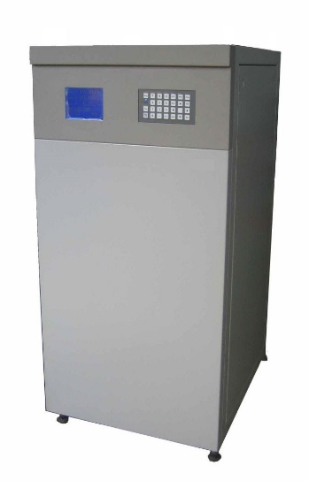
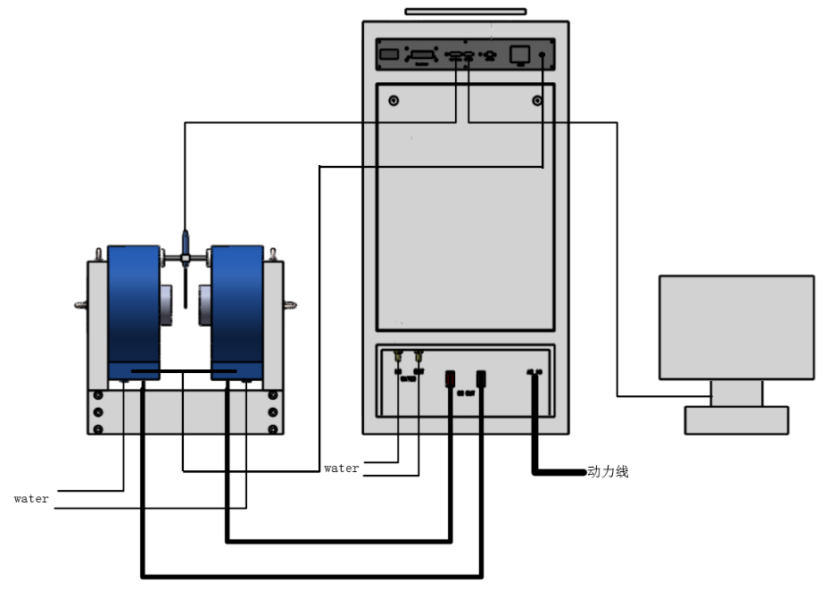

This DXMP series power supply features high performance, digital control, and bipolar constant current output. It is widely used for the excitation of electromagnets and Helmholtz coils to generate smooth, steady, and precisely controlled magnetic fields.
The unit utilizes four-quadrant operation suitable for inductive loads and incorporates various protection functions for robust operation.
Key Features
Bipolar constant current output (Four-quadrant operation).
Digital control interface.
Smooth zero-crossing point via non-output switch reversing.
Maximum current change rate up to 50 A/s (model dependent, see specs).
Multiple control modes: Local (Keyboard) and Remote (RS232/RS485).
Multiple output modes: Current Mode and Magnetic Field Mode (requires optional Gauss meter).
Comprehensive protection functions with LCD indication.
Optional high stability (10 ppm/h) current output.
Optional power ranges from 0.5 kW to 15 kW.
Optional current ranges from 10 A to 120 A.
Product Images & Screens

Product - Front View

Product Block Diagram
Specifications (Model P9060 Example)
Note: These specifications are based on the example table (likely Model P9060) in the manual. Refer to specific model documentation for exact parameters. Optional features (stability, power, current) vary.
Parameter Category
Specification
Input Voltage
Three-phase AC 220V (Phase voltage: 220V ± 10%)
Input Frequency
50/60 Hz
Source Effect
2 × 10⁻⁵ (for 10% input voltage fluctuation)
Input Line Diameter
> 4 mm² per core
Rated Input Line Current
> 10 A per phase
Output Mode
Bipolar Constant Current
Max Output Current
90 A
Max Output Voltage
60 V
Setting Resolution
2 × 19 bit
Current Stability (Standard)
50 ppm/h (after ≥30 min warm-up, 1hr @ full load)
Current Stability (Optional)
10 ppm/h available
Load Effect
2 × 10⁻⁵ (for 50% slow load change @ full output)
Current Accuracy
0.02% of reading ± 2 mA
Output Ripple Wave
5 × 10⁻⁵ ± 0.5 mA (RMS @ full load)
Rate of Change (Resistive)
15 A/s (Max speed for this model)
Output Line Diameter
≥ 25 mm²
Preheating Time
≥ 30 minutes
Working Temperature
0 °C to 35 °C
Storage Temperature
-10 °C to 50 °C
Working Humidity
< 80% (non-condensing)
Functionality
Enables Magnetic Field control mode
Measurement Scope
0 to ± 30000 Gs
Probe Connection
Rear Panel (HALLPROBE DB15 Female)
Requirement
Must use Dexing Magnet supplied probe
Cooling Method
Water Cooling (Requires external chiller)
Outline Dimensions (W×D×H)
600 mm × 700 mm × 1330 mm
Weight
115 Kg
Control & Output Modes
Control Modes
Local (KEY): Operation via front panel keyboard and LCD.
Remote (RS232/RS485): Control via computer using text-based commands.
Output Modes
Current Mode (CURRENT): Directly set the desired output current value (Amperes).
Magnetic Field Mode (FIELD): Directly set the target magnetic field strength (Gauss). Requires the optional integrated Gauss meter and probe.
Field Mode Warning: This mode is only valid when the optional Gauss meter is integrated and the probe is connected and correctly placed within the electromagnet. Setting field values without the probe correctly positioned can lead to excessive output current and potential equipment damage. Allow ~30 seconds for field/current direction calibration when switching to this mode.
Protection Functions
The power supply features comprehensive protection mechanisms, indicated on the LCD during faults:
Input Power Down Protection: Manages energy from inductive loads during shutdown.
Internal Overheating (HEAT/OH): Protects internal components and power modules from excessive temperature.
Module Overcurrent (OVER CURRENT/OC): Detects excessive output current, attempts reduction, and shuts down if needed.
Module Overpower (OP): Restricts output if power limits are exceeded.
External Protection (HEAT fault): Monitors external magnet temperature sensor.
Internal Condensation (DEW): Warns of potential condensation risk.
Cooling Water Flow (COOL): Ensures adequate flow for water-cooled models.
Fault Recovery: If a fault causes automatic shutdown, the unit typically requires a full power cycle (using the rear panel switch after front panel shutdown) with a wait of >10 seconds for internal circuits to reset completely.
Connections & Interfaces
AC Input: Rear panel terminal block (L1, L2, L3, Ground).
DC Output: Rear panel heavy-duty terminals (DC OUT: Red/Black).
Key Commands: `POWER ON/OFF`, `CHC?/[X|Y|Z]`, `CURR?/[value]`, `MODE?/[CURR|FIELD]`, `FIELD?/[value]`, `GM:ZERO`, `DMA [N] 90 [H]` (Set Rate), etc. (Refer to manual section 7.2 for full list).
RS485 Attention: When using RS485 with multiple power supplies on the same bus, ensure each unit is configured with a unique address via the menu (2. Communicate Address). Failure to do so can cause communication errors or interface damage.
Safety Warnings
High-Intensity Magnetic Field:
Keep magnetically sensitive instruments and materials (>1m distance recommended) away.
Personnel with pacemakers, ferromagnetic implants, or artificial limbs are strictly prohibited from operating or being near the equipment.
Mobile phones, electronic devices, bank cards, and magnetic storage media can be affected or damaged. Do not carry these items during operation.
Ensure the area is properly marked and only trained personnel operate the system.
Electrical Safety:
Only experienced personnel should operate the equipment.
Verify input voltage and current ratings match supply.
Ensure all power and load connections are correct, secure, and rated appropriately before applying power. Incorrect connections can cause damage or injury. Loose output connections can severely damage the power supply.
Do not touch any input, output, or control terminals during operation.
Before connecting/disconnecting any cables (power, load, control) or adjusting internal circuits (prohibited unless authorized), shut down the power supply using the front panel, turn off the rear main switch, and wait 10-20 seconds for internal capacitors to discharge fully.
Do not open the equipment cabinet for adjustment or repair yourself. Contact Dexing Magnet support.
Operational Cautions:
Ensure proper cooling (airflow path clear for air-cooled, correct flow/temperature for water-cooled). Water temperature should be close to ambient to avoid condensation.
Use only Dexing Magnet Gauss meter probes with the Field Mode option. Follow probe handling guidelines carefully.
Input/Output cables must have sufficient current-carrying capacity to prevent overheating and fire hazards.